Maya rigging: Introduction to rigging
Maya rigging: Introduction to rigging a human torso
Maya rigging: Introduction to rigging the neck and the head
This time, we will set up the shoulders and the arms. In reality, the bones of the shoulder and the arm consist of the scapula, clavicle, humerus, radius and ulna. We could get away with just creating a single joint to act as the clavicle and scapula combined, another joint as the humerus and a final joint as the radius and ulna combined. For this tutorial, we are going to take things a little further by creating a clavicle and a scapula joint and then the humerus and a radius/ulna joint. I prefer to do this as it just adds an extra level of deformation to the shoulder region and makes it feel as if there is an underlying structure beneath the hollow mesh.
We will drive the scapula and the clavicle through an expression so, as the shoulder region or arm rotates, they will follow automatically. But, as some animators prefer full control over a rig, we will make sure we can disable this feature. We also need to capture the natural fall-off that occurs as we twist the forearm, going from the prone to supine position. To do this, we will add extra twist joints that are driven through an expression. This is just one of many ways to create such a result so do try out other methods such as using Multiply Divide nodes.
Lastly, we will want to add the ability to switch between FK and IK mode. To do this we will create three sets of arm joints: an FK set, an IK set and a bind set. We will then use constraints and Set Driven Keys to define which set of joints (FK or IK) will drive the bind set. A control will also be created to allow the animator to pick and choose which mode he/she would like to animate in.
So, without further ado, let the rigging commence…
Let's start with the clavicle. In the Front view, go Skeleton > Joint Tool and draw a 2-joint chain starting somewhere close to the mid-line of the character and ending close to the shoulder. Now fix the orientation by going Skeleton > Orient Joint Tool (Options). Set the Primary Axis to Y, the Secondary Axis to X and the Secondary Axis World Orientation to X. Hit Apply and rotate the joints to check if positive X rotation creates flexion. Next, position the joint correctly by translating the root joint; I popped the joint in a similar position to where you would find the clavicle on a real human being and then used the Joint Orient to rotate the joint back. Remember, do not use the rotate channels to get the joint into position. Once in place, rename the joints: l_clavicle_jnt and l_clavicleEnd_jnt.
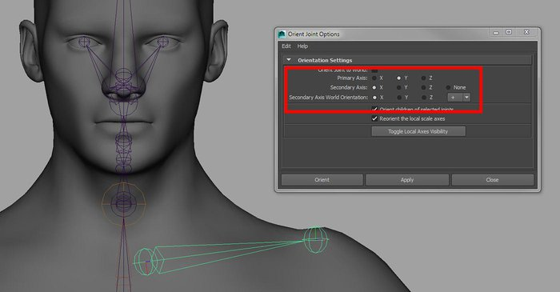Creating the clavicle joints using the Orient Joint Tool
Next we'll add the shoulder joint and the arm joints. In the Front view, use the Joint Tool to create a new chain of joints. Create the first joint at around the same position as l_clavicle_jnt, then another joint around the armpit, a third joint at the elbow and a final joint at the wrist. Fix the orientation of the joints by using the Orient Joint Tool. You can use the same settings as we did for the clavicle but set the Secondary Axis World Orientation to – (negative).Then translate the root joint into place and use the Joint Orient to again, orient the joints to sit into the arm geometry. You can also use the length of the joint (translate Y in our case) if needed. Once you are happy with the placement of the joints, select them one-by-one and check that there are no values on the rotate channels or the translate X or Z channel. For the root joint, it is okay to have values in all the translate channels. Now go through and rename the joints from root to tip: l_shoulder_jnt, l_upperArm_jnt, l_lowerArm_jnt and l_armEnd_jnt.
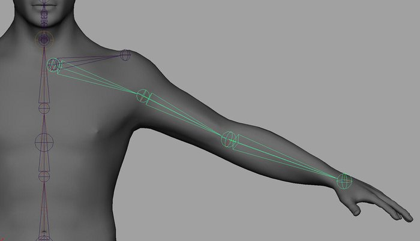The shoulder joint and the arm joints created in the Front view
Lastly, we'll add the scapula joint. To create this joint, go Skeleton > Joint Tool, pop into the Perspective view, activate Point Snapping (or hold down the V key) and snap to 2 points on the model around the area where the scapula would sit. Now use the Orient Joint Tool with the following settings: Primary Axis is set to Y, Secondary Axis is set to Z and Secondary Axis World Orientation is set to X (+). Rename the joints l_scapula_jnt and l_scapulaEnd_jnt. Select both l_scapula_jnt and l_clavicle_jnt and parent both joints under l_shoulder_jnt.
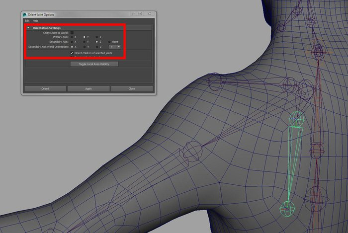The scapula in place by point snapping the joints to the geometry
To create the twist joints, first select l_upperArm_jnt by hitting Ctrl+D and then un-parent it from the shoulder by hitting Shift+P. Then select l_shoulder_jnt and hit Ctrl+H to hide it. To split the joints, I will be using a script that you can download from CreativeCrash. Open up the script in a MEL tab in the Script Editor, highlight all the text (Ctrl+A) and then hit Enter on the number pad on your keyboard to Execute it, or Command > Execute. Quickly go in and rename the duplicated joint chain for the arm so the naming does not clash with other joints in the scene. Now select the root joint in the chain and hit Select Start Joint on the Joint Splitter tool. Set the Jnt Qty to 3 and hit Split Joints. Select the lower arm joint and also split that joint with the same settings.
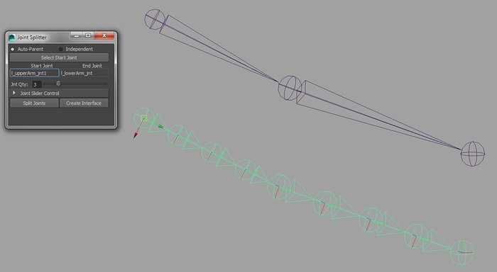Adding the twist joints using the Joint Splitter tool
The arm chain now consists of 9 joints altogether. We only need to keep the 3 joints between the arm root and the elbow and the 3 joints between the elbow and the end of the arm. So, select the second joint in the chain and hit Shift+P. Delete the joint that is now floating on its own. Then select the joint that was the elbow joints and hit Shift+P. Now, select the next joint down from the elbow and hit Shift+P and then delete the free-floating elbow joint. Lastly, delete the end joint from the forearm portion. You should now have 2 chains, both being made up of 3 joints.
Now, unhide l_shoulder_jnt by selecting it in the Outliner and hitting Shift+H. Select all 3 twist joints for the upper arm and then parent all 3 under l_upperArm_jnt. Then, select all the twist joints for the lower arm and parent them under l_lowerArm_jnt. Rename the joints from top to bottom; l_upperArmTwistA_jnt, l_upperArmTwistB_jnt, l_upperArmTwistC_jnt, l_lowerArmTwistA_jnt, l_lowerArmTwistB_jnt, and l_lowerArmTwistC_jnt. To make the lower arm joints twist correctly with the rotate Y of the wrist (we'll do this with an expression), select l_armEnd_jnt, go Skeleton > Orient Joint Tool (Options). Turn on Orient Joint to World and hit Apply.
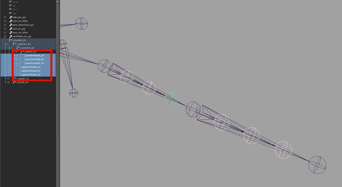Parenting the twist joints to the relevant driving joints
To drive the upper and lower arm twists, we will use an expression. Go Window > Animation Editors > Expression Editor and create the following expression:
l_upperArmTwistA_jnt.rotateY = l_lowerArm_jnt.rotateY * 0.25; l_upperArmTwistB_jnt.rotateY = l_lowerArm_jnt.rotateY * 0.5; l_upperArmTwistC_jnt.rotateY = l_lowerArm_jnt.rotateY * 0.75;
l_lowerArmTwistA_jnt.rotateY = l_armEnd_jnt.rotateY *0.25; l_lowerArmTwistB_jnt.rotateY = l_armEnd_jnt.rotateY *0.5; l_lowerArmTwistC_jnt.rotateY = l_armEnd_jnt.rotateY *0.75;
Rename the expression l_armTwist_expr. Once we parent the geometry to the arm, the effects of this will be more noticeable.
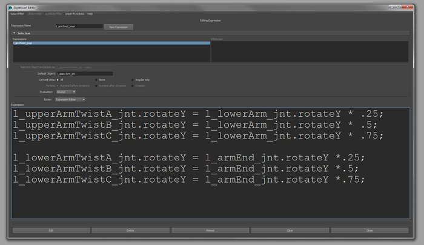Using an expression to drive the twist joints
We now need to chop up the mesh and parent it to the relevant joints. I won't go into detail here, as it is the same process I employed to create the low-res mesh for the torso, the neck and the head. Do make sure to rename the chopped up geometry using the same naming convention that we used for the torso and the neck and head geometry.
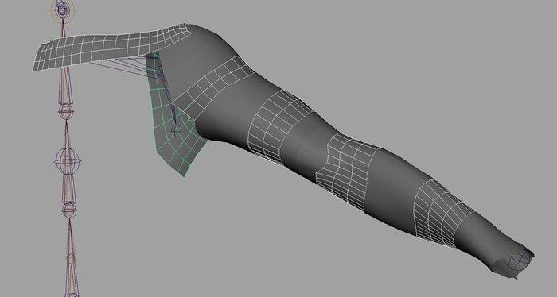Chopping up the model and parenting it under the relevant joint
Select l_upperArm_jnt, hit Ctrl+D to duplicate it and then Shift+P to bring it out of the hierarchy. In the Outliner, open up the joint chain and delete all the twist joints and the duplicated geometry that came along. You should be left with 3 joints which you should then rename from root to tip: l_upperArm_FK_jnt, l_lowerArm_FK_jnt and l_armEnd_FK_jnt. Now select l_upperArm_FK_jnt and hit Ctrl+D. Rename the new joint chain to end with _IK for all the joints instead of _FK.
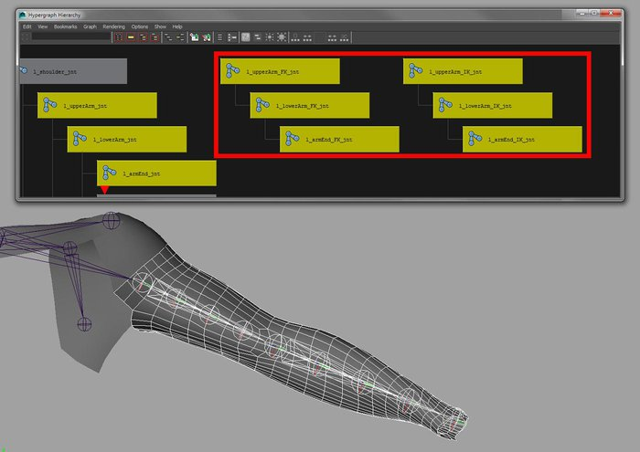Duplicating the original arm chain for the FK and the IK joint chains
Now we will constrain the joints that will drive the mesh to both the FK and the IK joint chains. In the Outliner, select in this order: l_upperArm_FK_jnt, l_upperArm_IK_jnt and then l_upperArm_jnt and go Constrain > Orient. Then select in this order: l_lowerArm_FK_jnt, l_lowerArm_IK_jnta and then l_lowerArm_jnt and go Constrain > Orient. You can also do the same for l_armEnd so we can see the results of the forearm twist. Later on, I will break the constraint to l_armEnd_jnt as I will use a control to drive the forearm twisting.
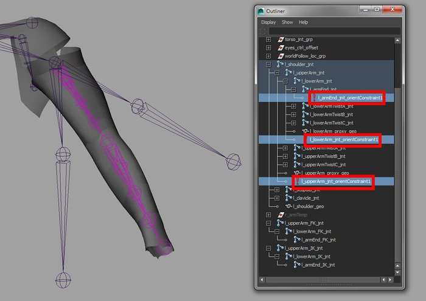Using Orient Constraints to drive the main arm chain
We now need a control to allow us to switch between FK and IK. In the front view, turn on Grid Snapping (or hold down the X key) and go Create > CV Curve Tool (Options). Set the Curve Degree to 1 Linear and then draw out the letters FKIK. I did this as 4 individual curves. You can draw out any shape you like but I figure a control made from the letters FKIK will be pretty easy for the animator to work out. Then select all the curves and go Modify > Center Pivot. I now want to combine these curve shapes together. To do this, in the Outliner, hold down the right-mouse button and turn on Show Shapes. Now select curveShape2, curveShape3, curveShape4 and then Ctrl+select curve1. Now in the Command Line (make sure it is set to MEL), type and execute the following command:
parent –r –s;
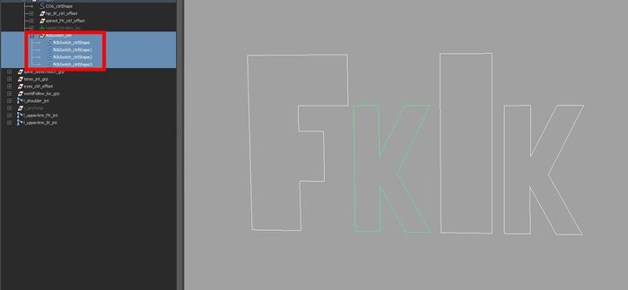Combining multiple curves together for the fkIkSwitch_ctrl
This will pop all the curve shapes under the one node. You can now turn off Shaw Shapes and then delete the empty curve nodes. Selecting any one of the letters now will select the one object. Rename the control fkIkSwitch_ctrl and move it to sit slightly behind the torso of the character. With the control selected, go Modify > Freeze Transforms and Edit > Delete By Type > History. Now parent the control under COG_ctrl and then lock and hide all the translate, rotate and scale channels for fkIkSwitch_ctrl.
Let's add some attributes now to allow the animator to switch between FK and IK. Select the fkIkSwitch_ctrl and go Modify > Add Attribute. Then add the following 4 attributes: l_arm, r_arm. l_leg, r_leg. For all 4 attributes, set the Data Type set to Float, Minimum set to 0, Maximum set to 1 and the Default set to 0.
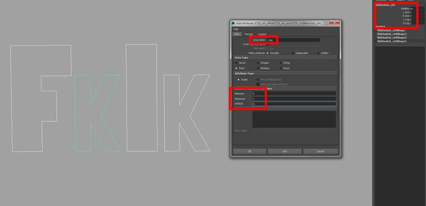Adding the attributes that will allow the animator to switch between FK and IK
Now let's use Set Driven Keys (SDK) to get everything working. To open up the SDK window, go Animate > Set Driven Key > Set. Select the fkIkSwitch_ctrl and hit Load Driver on the SDK window. Then select the 3 orient constraint nodes (you'll find these living under l_upperArm_jnt, l_lowerArm_jnt and l_armEnd_jnt) and hit Load Driven on the SDK window. Set the l_arm attribute to 0 on the fkIkSwitch_ctrl (this will be FK) and then, one-by-one, set the IK Jnt W1 to 0 on each constraint. Make sure to leave FK Jnt W0 at 1. Then, in the top right portion of the SDK window, highlight L Arm and in the bottom left window, highlight the first orient constraint node. Then highlight the 2 constraint weights in the bottom-right window and hit Key. Do this for the remainder of the orient Constraints. That should be the FK covered; let's take care of the IK next. To do this, set the L Arm attribute to 1 (IK mode) on the fkIkSwitch_ctrl. Then reverse the weights on each constraint so FK Jnt W0 is set to 0 and IK Jnt W1 is set to 1 and hit Key with the relevant attributes highlighted in the SDK window.
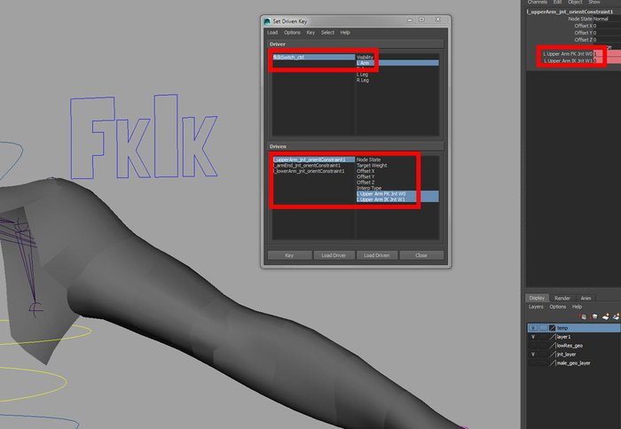Using Set Driven Keys to control which joint chain (the FK or the IK) should drive the main arm chain
To create the controls for the FK arm chain, we will use the createControls.py script (found in the scripts directory in the 3dt_rigging folder supplied with this tutorial). Select both l_upperArm_FK_jnt, l_lowerArm_FK_jnt and execute the script to create the controls. They may be pretty small to begin with so select the newly created controls from the Outliner and hit F8 to go into component mode and resize and reposition the controls so they are easily selectable. Remember not to edit the control shapes in object mode. Next parent l_lowerArm_FK_ctrl_offset under l_upperArm_FK_ctrl to create a control hierarchy that mimics the FK arm chain and behaves correctly. Link to assets
Now for the shoulder control: select l_shoulder_jnt and once again, run the createControls.py script. Using component mode (F8), reshape and reposition the new control. Now parent l_upperArm_FK_ctrl_offset under l_shoulder_ctrl and the entire FK arm structure should follow the shoulder control.
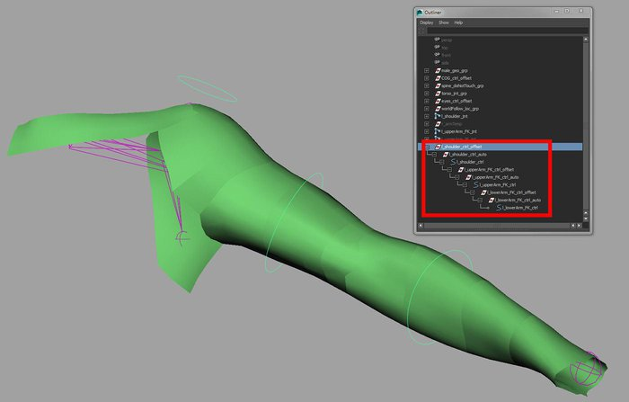Using the createControls.py script to add the FK arm and shoulder controls
Select l_clavicle_jnt and execute the createControls.py script to create the control. Once again, reshape and reposition the control so it is easily selectable in component mode. Parent l_clavicle_Ctrl_offset under l_shoulder_ctrl to have the clavicle follow the main driving control. To have the clavicle create some subtle movement as the arm is raised and lowered, we will use an expression.
First let's add an attribute so the animator can decide if he/she would like the expression to be active. Select l_clavicle_ctrl and go Modify > Add Attribute. Give it a Long name of autoClavicle, make it a Float with a Minimum of 0 and a Maximum of 1. Now open up the Expression Editor and create the following expression:
l_clavicle_ctrl_auto.rotateX = l_upperArm_jnt.rotateX * l_clavicle_ctrl.autoClavicle; l_clavicle_ctrl_auto.rotateY = l_upperArm_jnt.rotateY * l_clavicle_ctrl.autoClavicle; l_clavicle_ctrl_auto.rotateZ = l_upperArm_jnt.rotateZ * l_clavicle_ctrl.autoClavicle;
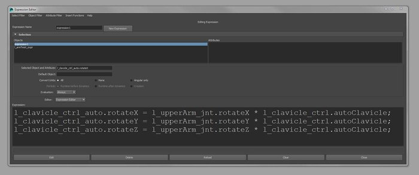Using an expression to allow the clavicle to be driven by the arm
Now set a value of 0.05 (I think this value worked best) for the autoClavicle attribute on l_clavicle_ctrl and you should see some subtle movement to the clavicle if you rotate the l_upperArm_FK_ctrl. The animator can now control how much or how little the clavicle should follow the arm and as we have applied the expression to the auto node on the clavicle hierarchy, the animator can still animate on top using the l_clavicle_ctrl.
Let's now create the scapula control. Select l_scapula_jnt and execute the createControls.py script. Again, reshape and reposition the control in component mode and then parent l_scapula_ctrl_offset under l_shoulder_ctrl.
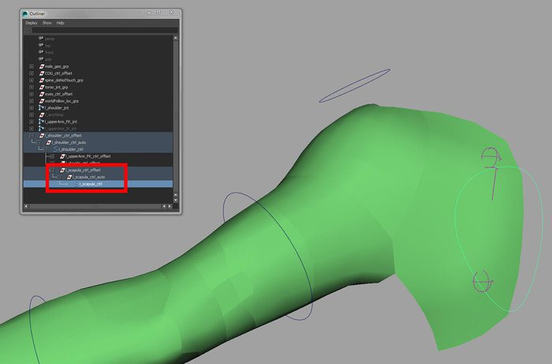The scapula control in place and parented under the shoulder control
Again, we will use an expression to drive the scapula as we have the clavicle. First select the scapula and go Modify > Add Attribute. Give it a Long name of autoScapula, make it a Float with a Minimum of 0 and a Maximum of 1. Now open up the Expression Editor and create the following expression:
l_scapula_ctrl_auto.rotateX = -1 * l_shoulder_jnt.rotateZ * l_scapula_ctrl.autoScapula;
Set the value of autoScapula to 0.5, rotate the shoulder control in the Z-axis and you should see some movement to the scapula. Again, how much movement you want here can be altered by playing with the autoScapula attribute. Plus, as we have applied this to the auto node of our scapula control hierarchy, the animator can still work on top using the l_scapula_ctrl.
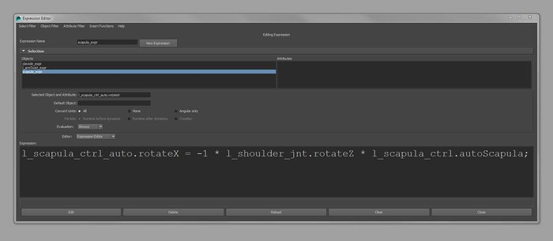The scapula being driven by the rotation of the shoulder
Switch to IK mode by setting the L Arm attribute to 1 on the fkIkSwitch_ctrl and then hide the FK joint chain and l_upperArm_FK_ctrl. Now select l_upperArm_IK_jnt and hit Ctrl+D to duplicate it. Rename the new chain from root to tip: l_upperArmDrive_IK_jnt, l_lowerArmDrive_IK_jnt and l_armEndDrive_IK_jnt. We will now drive the original IK set of joints by this new chain, only we will not constrain the rotate Y axis of the l_lowerArm_IK_jnt. This way, we can apply an IK Rotate-Plane Solver to drive the arm and still be able to twist the forearm from the elbow region.
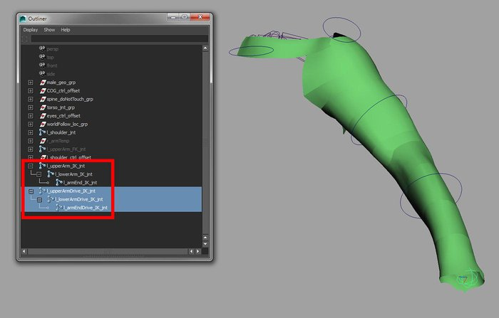Duplicating the IK joint chain to create a driver set
So now, go Skeleton > IK Handle Tool (Options) and make sure the Current Solver is set to Rotate-Plane Solver. In the Outliner, click on l_upperArmDrive_IK_jnt, hold down the Ctrl key and then click on l_armEndDrive_IK_jnt. Rename the ikHandle1 to l_arm_IK. Create a control for l_arm_IK using the createControls.py script. Make sure that you edit the final line to read cmds.pointConstraint(ctrl, s, mo=0) rather than cmds.orientConstraint(ctrl, s, mo=0). Go in and also rename the controls correctly as the script will not do so for anything that does not have a suffix of _jnt. Once the control is created, go into component mode (F8) and reshape and reposition the control so it is easily selectable.
Now we want to drive the original set of IK joints with the driver set of joints. In the Outliner, select l_upperArmDrive_IK_jnt, ctrl-select l_upperArm_IK_jnt and go Constrain > Orient (Options). Make sure the Constrain axes parameter is set to All and hit Apply. Then select l_lowerArm_Drive_IK_jnt, ctrl-select l_lowerArm_IK_jnt and go Costrain > Orient (Options). This time set the Constraint axes to X and Y only and hit Apply.
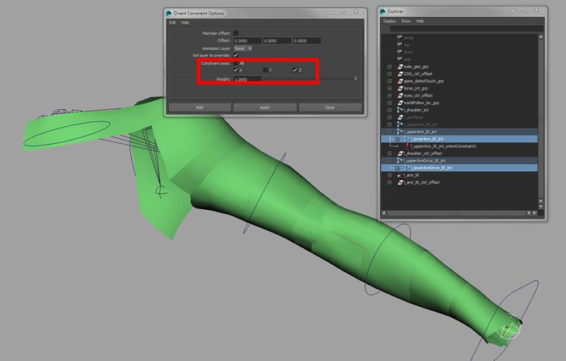Make sure not to constrain the Y-axis when orient constraining the lower arm joint
Next, we need to drive the elbow twist. Select l_arm_IK_ctrl and go Modify > Add Attribute. Give it a Long name of elbowTwist, make it a Float and leave all the other parameters blank. Go Window > General Editors > Connection Editor and with the l_arm_IK_ctrl selected hit Reload Left. Select l_lowerArm_IK_jnt and hit Reload Right in the Connection Editor window. On the left-hand side, highlight elbowTwist and on the right-hand side, highlight rotateY (you will find this under Rotate). You can now drive the twist of the elbow using the new attribute.
Let's add the ability to twist the entire arm now. Select l_arm_IK_ctrl and go Modify > Add Attribute. Give it a Long name of armTwist, make it a Float and leave all the other parameters blank. Go Window > General Editors > Connection Editor and with the l_arm_IK_ctrl selected, hit Reload Left. Select l_arm_IK and hit Reload Right in the Connection Editor window. On the left-hand side, highlight armTwist and on the right-hand side, highlight twist. The new attribute will now twist the entire arm.
A slight problem that we have now is that if we position the arm in certain poses, the elbow twist creates some funky behavior. To fix this, select l_lowerArm_IK_jnt, open up the Attribute Editor (Ctrl+A) and set the Rotate Order to YZX. Set the Rotate Order to YZX for l_lowerArm_jnt, l_lowerArm_FK_jnt, l_lowerArmDrive_IK_jnt and l_lowerArm_FK_ctrl.
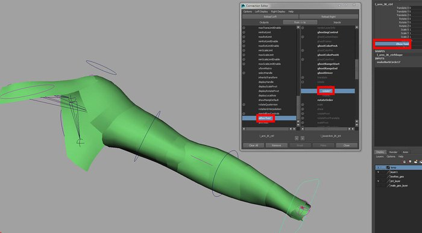Using the Connection Editor allow the animator to twist the elbow region from the main IK control
For the elbow control, I would like a locator-like shape. So, select l_eye_ctrl_offset, hit Ctrl+D to duplicate it and then Shift+P to un-parent it from its current hierarchy. Rename the duplicated control hierarchy from top to bottom as follows: l_elbow_ctrl_offset, l_elbow_ctrl_auto and l_elbow_ctrl. You can use the Search and Replace Names tool to speed up the renaming of the control. You'll find this tool under Modify.
Next we need to position the elbow control correctly so the arm does now pop when switching between FK and IK. To do this, select in this order: l_upperArmDrive_IK_jnt, l_lowerArmDrive_IK_jnt, l_armEndDrive_IK_jnt and then l_elbow_ctrl_offset. Go Constrain > Point (Options), make sure Maintain Offset it turned off and hit Apply. Now select l_lowerArmDrive_IK_jnt, ctrl-select l_elbow_ctrl_offset in the Outliner and go Constrain > Aim. Now that the elbow control is correctly positioned, delete the 2 constraint nodes that live under l_elbow_ctrl_offset. Then, make sure the Translate tool is set to Local and drag the l_elbow_ctrl_offset out slightly along the Z-axis. Lastly, select l_elbow_ctrl and Ctrl+select l_arm_IK in the Outliner or Shift+select it in the viewport and go Constrain > Pole Vector. You can now translate the l_elbow_ctrl to control the twisting of the arm.
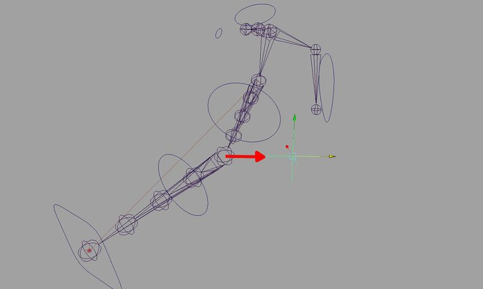Creating an elbow control to twist the arm and aligning it correctly
Let's start by cleaning up the Outliner. First select l_upperArm_FK_jnt, l_upperArm_IK_jnt, l_upperArmDrive_IK_jnt and parent them under l_shoulder_jnt. Next parent l_shoulder_ctrl_offset under chest_IK_ctrl. Now, in this order, select l_shoulder_ctrl, l_shoulder_jnt and go Constrain > Point. This will allow the arm to follow the torso correctly. Now, select both l_arm_IK_ctrl_offset and l_elbow_ctrl_offset and hit Ctrl+G. Rename the new group l_arm_IK_ctrl_grp. Select l_Arm_IK, l_shoulder_jnt and hit Ctrl+G. Rename that new group l_arm_rig_grp.
Let's now mirror the arm joint chain to the other side. Select l_shoulder_jnt and go Skeleton > Mirror Joint (Options). Set the Mirror across to YZ and the Mirror function to Behaviour. Pop an l_ for Search for and an r_ for Replace with. This will rename the joints for us correctly. Hit Mirror and we should now have the joints in place for the right arm. Go through and delete all the constraint nodes and the geometry that have come along with the mirroring and rebuild the rig for the right arm.
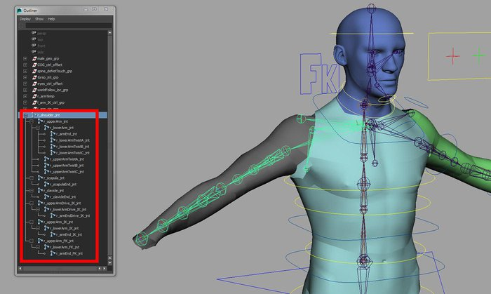Mirroring the joints for the right arm
The last thing to do is to lock and hide some of the attributes from the Channel Box so the animator cannot set keys on them. First select l_clavicle_ctrl, l_shoulder_ctrl, l_scapula_ctrl, l_upperArm_FK_ctrl and l_lowerArm_FK_ctrl. In the Channel Box, highlight all the translate and the scale channels, hold down the RMB and go Lock and Hide Selected. Then select l_arm_IK_ctrl and lock and hide the rotate and scale channels.
Next time, we'll create the rig for the hand and the fingers.
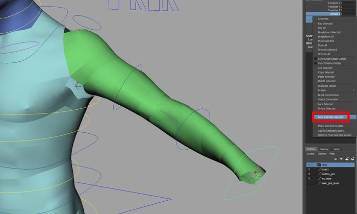Make sure to lock and hide any attributes you wish the animator not to key
So far, we've used orient constraints to switch between FK and IK mode. This is just one of many ways to create such a result. Another method is to use the Blend Colors node which you will find in the HyperShade, under Create > Color Utilities. With this node, you could plug the rotate attributes from the IK and FK joints into the Color 1 and Color 2 parameters on the Blend Colors node. The output from the Blend Colors node could then be plugged into the rotate attributes for the joints that will drive the mesh. The Blender attribute on the Blend Colors node will then allow you to dictate which joint chain (FK or IK) is in control and this could then be driven through a Set Driven Key.
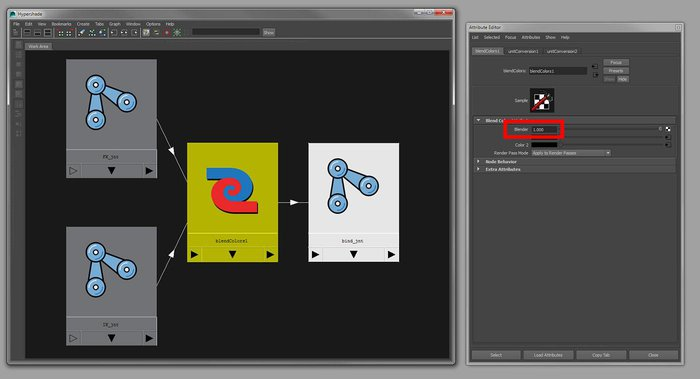Using a Blend Colors node to handle the blending between the FK and IK modes